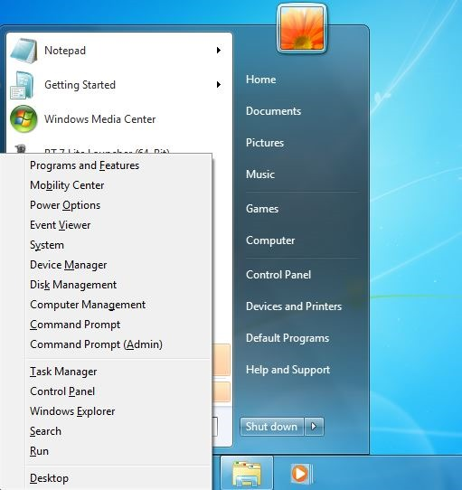

here is a lazy solution.
install snap plus:
https://fileforum.betanews.com/detail/1369342084
http://www.softpedia.com/get/Desktop-En ... Plus.shtml
and put this right click script to windows startup, enjoy
http://www.mediafire.com/file/y24vyyzdllb51r2/WinX.exe
